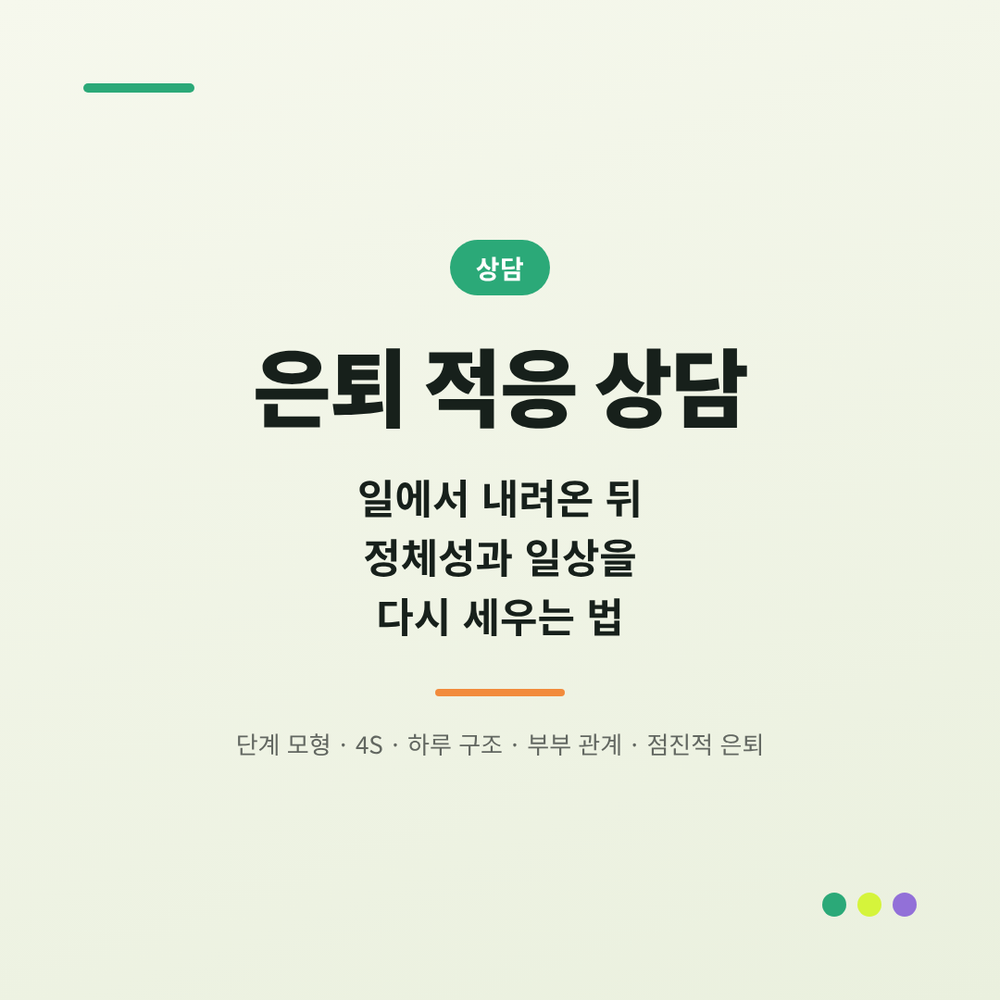
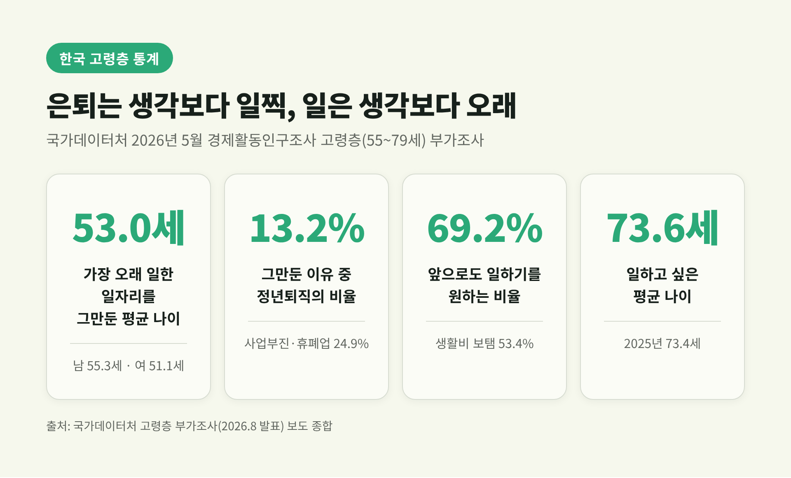
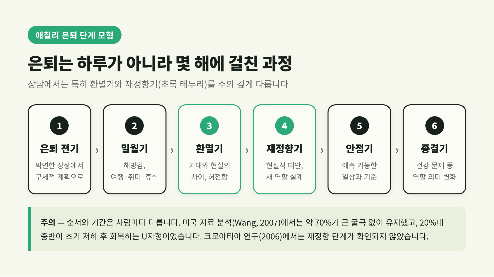
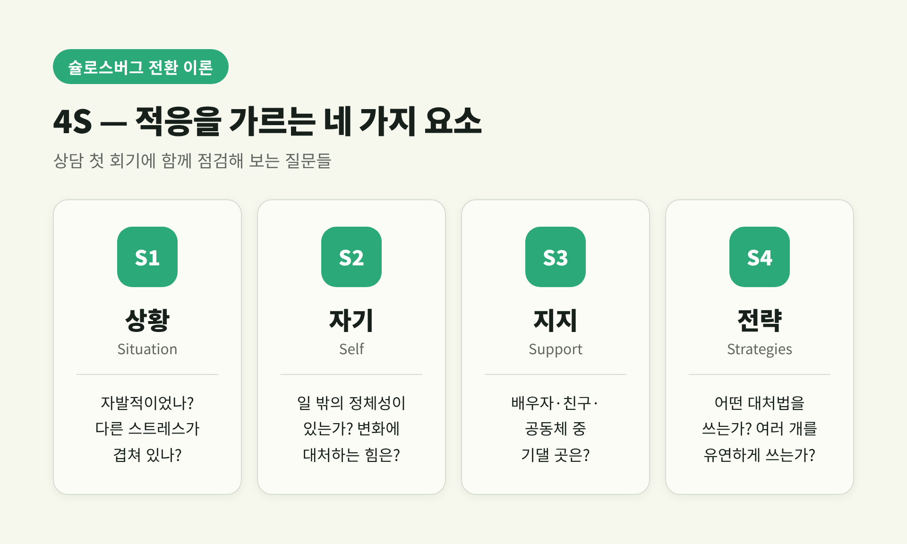
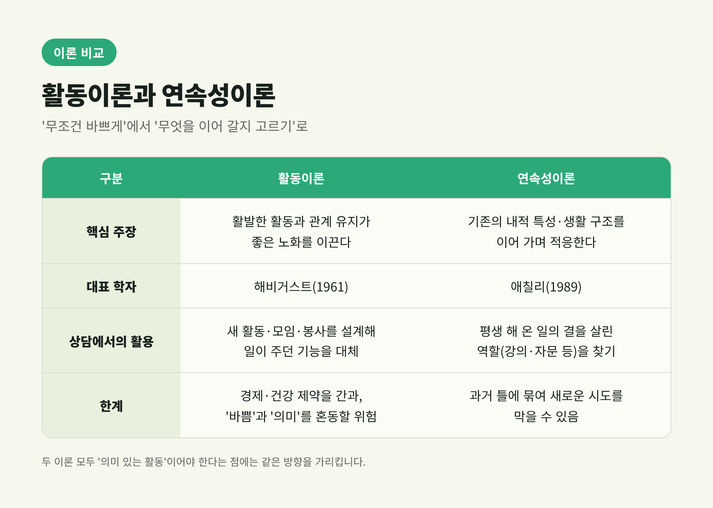
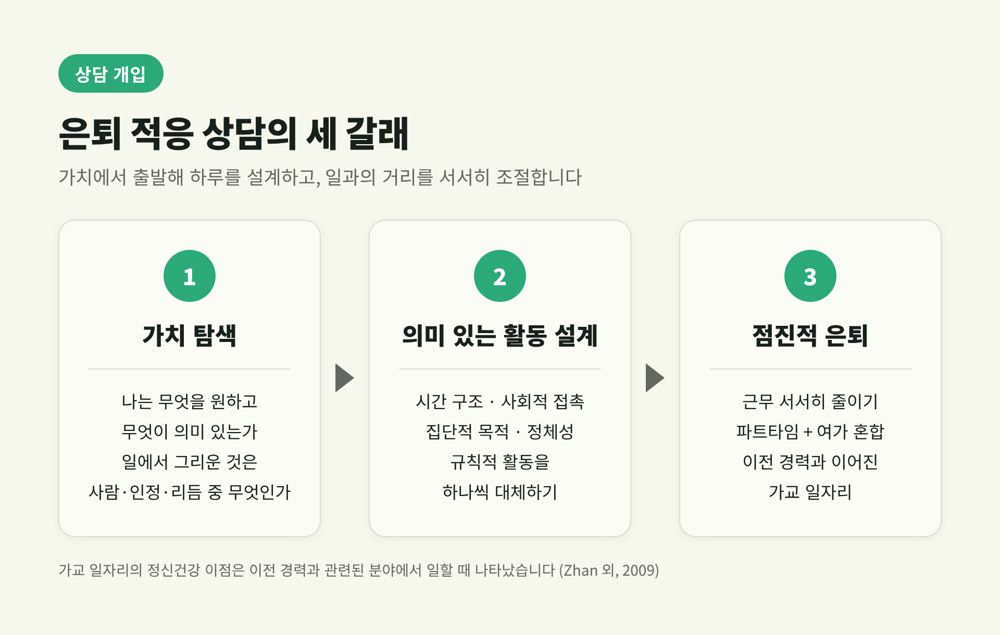
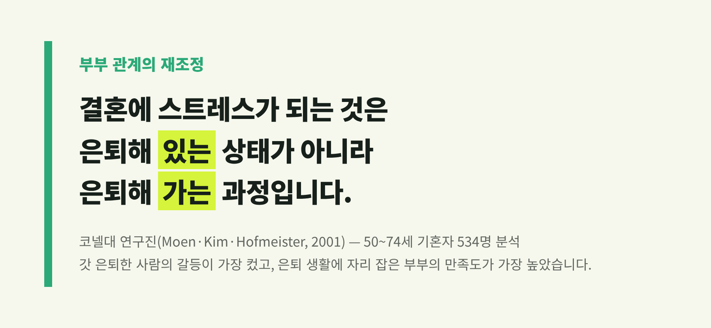

은퇴 적응 상담 — 일에서 내려온 뒤 정체성과 일상을 다시 세우는 법

이번 글에서는 은퇴 적응을 상담의 눈으로 정리해 보겠습니다.
핵심부터 말씀드리면, 은퇴는 하루에 끝나는 사건이 아니라 몇 년에 걸친 과정입니다.
그 과정에서 흔들리는 것은 돈만이 아니라 정체성, 하루의 구조, 가까운 관계입니다. 아래에서 이론과 통계, 상담에서 실제로 쓰는 질문을 차례로 살펴봅니다.
한국에서 '은퇴'가 찾아오는 시점
먼저 숫자를 보겠습니다.
국가데이터처(옛 통계청)의 2026년 5월 고령층 부가조사에 따르면, 55~79세가 가장 오래 근무한 일자리를 그만둔 평균 나이는 53.0세였습니다. 남성은 55.3세, 여성은 51.1세입니다.
그 일자리에서의 평균 근속은 17년 7.1개월이었습니다.
그만둔 이유도 눈여겨볼 만합니다.
사업 부진·휴폐업이 24.9%, 건강 악화 22.1%, 가족 돌봄 15.2%였고, 정년퇴직은 13.2%에 그쳤습니다. 권고사직·명예퇴직·정리해고도 9.9%였습니다.
즉 상당수는 스스로 고른 시점이 아니라 상황에 밀려 일에서 내려옵니다.
한편 같은 조사에서 69.2%는 앞으로도 일하기를 원했고, 희망하는 근로 연령은 평균 73.6세였습니다.
이유는 생활비 보탬(53.4%)이 가장 많았지만, 일하는 즐거움(36.7%)도 적지 않았습니다.

2025년 사회조사에서는 19세 이상의 71.5%가 노후를 준비하고 있다고 답했습니다. 다만 준비 수단은 국민연금(58.5%)에 쏠려 있습니다.
50대 초반에 주된 일자리를 떠나 70대 초반까지 일하고 싶어 하는 사이, 그 20년이 고스란히 '적응의 시간'이 되는 셈입니다.
은퇴는 단계를 거친다 — 애칠리의 모형
사회노년학자 로버트 애칠리는 1970년대에 은퇴 적응을 단계로 설명했습니다.
대략 다음과 같은 흐름입니다.
- 은퇴 전기: 멀리서 막연히 그리다가, 가까워지면 구체적으로 계획합니다.
-
밀월기: 해방감이 큽니다. 미뤄 둔 여행과 취미에 몰두하거나 그저 푹 쉽니다.
-
환멸기: 기대가 비현실적이었음을 깨닫고 허전함이 찾아옵니다.
-
재정향기: 현실적인 대안을 찾고 새 역할과 일상을 설계합니다.
-
안정기: 예측 가능한 하루와 나만의 기준이 자리 잡습니다.
- 종결기: 건강 문제 등으로 '은퇴자'라는 역할 자체가 의미를 잃는 시기입니다.

이 모형의 장점은 분명합니다.
은퇴 후 1~2년 사이 찾아오는 허전함을 '나만 이상한 것'이 아니라 흔한 과정으로 읽게 해 줍니다.
미국 노스캐롤라이나의 고령 근로자를 은퇴 전부터 24개월 뒤까지 추적한 연구(Reitzes & Mutran, 2004)도 이 모형을 대체로 지지했습니다.
그러나 한계도 뚜렷합니다.
크로아티아·보스니아 은퇴자 181명을 분석한 연구(Penezić 외, 2006)에서는 '재정향' 단계가 확인되지 않았습니다. 대신 생계를 위해 비공식적으로 다시 일하는 패턴이 따로 나타났습니다. 연구진은 이 모형이 거의 미국 표본에서 나왔고, 문화와 경제 사정에 따라 단계가 달라진다고 지적했습니다.
조기 은퇴자와 비자발적 은퇴자는 애초에 밀월기 점수가 낮았습니다.
미국 건강·은퇴 조사 자료를 분석한 왕(Wang, 2007)의 연구는 더 근본적인 질문을 던집니다.
은퇴자의 심리적 안녕은 하나의 경로가 아니라 세 가지 궤적으로 나뉘었습니다. 이를 인용한 후속 연구에 따르면 약 70%는 큰 굴곡 없이 유지했고, 20%대 중반은 초기에 떨어졌다가 회복하는 U자형, 소수(약 4%)는 오히려 나아졌습니다.
정리하면 이렇습니다.
단계 모형은 지도이지 시간표가 아닙니다. 밀월기 없이 곧바로 허전함이 오기도 하고, 큰 흔들림 없이 지나가기도 합니다.
슐로스버그의 4S — 무엇이 적응을 좌우하는가
단계가 '언제'를 묻는다면, 낸시 슐로스버그의 전환 이론은 '무엇이' 적응을 가르는지를 묻습니다.
그는 네 가지 요소, 이른바 4S를 꼽았습니다.
- 상황(Situation): 은퇴가 자발적이었는가, 다른 스트레스(질병, 부모 돌봄, 자녀 문제)가 겹쳤는가.
-
자기(Self): 변화에 대처하는 내적 힘, 일 외의 정체성이 얼마나 있는가.
-
지지(Support): 배우자, 친구, 공동체 등 기댈 곳이 있는가.
- 전략(Strategies): 어떤 대처 방법을 쓰는가. 여러 전략을 유연하게 쓸수록 잘 견딥니다.

이 틀은 상담에서 특히 쓸모가 있습니다.
같은 53세 퇴직이라도, 건강 악화로 갑자기 그만둔 사람과 준비 끝에 스스로 내려온 사람은 '상황'부터 다릅니다. 앞의 통계에서 정년퇴직이 13.2%에 불과했다는 점을 떠올리면, 한국에서는 상황 요인을 먼저 살피는 것이 자연스럽습니다.
슐로스버그는 원하던 변화조차 불안정하게 느껴질 수 있고, 적응에 지름길은 없다고 말합니다.
그래서 그가 건넨 조언은 의외로 단순합니다. 스스로를 너무 몰아세우지 말라는 것입니다.
일이 주던 것들 — 역할, 정체성, 하루의 구조
은퇴 후의 허전함은 어디서 올까요.
사회심리학자 마리 야호다는 일이 소득 말고도 다섯 가지를 준다고 보았습니다. 시간의 구조, 가족 밖 사람들과의 접촉, 나보다 큰 목표에 대한 소속, 지위와 정체성, 그리고 규칙적인 활동입니다.
원래 실업 연구에서 나온 설명이지만, 은퇴 상담에서도 그대로 통합니다.
명함이 사라지면 "무슨 일 하세요?"라는 질문에 답하기가 어려워집니다.
출근이 사라지면 월요일과 토요일의 경계가 흐려집니다.
미국심리학회 소식지는 직업 정체성의 상실을 흔히 간과되는 적응 과제로 꼽았습니다. 일에서 성공하게 해 준 성향이 은퇴 뒤에는 오히려 걸림돌이 될 수 있다는 지적도 덧붙였습니다.
불안이나 우울을 겪으면서도 드러내지 않는 은퇴자가 많다는 점도 함께 기억해 둘 만합니다.
여기서 두 이론이 갈립니다.
활동이론(해비거스트, 1961)은 활발한 활동과 관계 유지가 좋은 노화를 이끈다고 봅니다. 다만 '바쁜 것'이 아니라 '의미 있는 것'이어야 한다는 단서가 붙고, 경제·건강 제약을 간과한다는 비판도 받습니다.
연속성이론(애칠리, 1989)은 사람들이 기존의 내적 특성과 외적 생활 구조를 이어 가려 한다고 봅니다. 평생 가르친 사람이 은퇴 후 강의 봉사를 하는 식입니다.

예전에는 은퇴하면 무조건 바쁘게 지내라는 말이 흔했습니다.
지금은 무엇을 이어 가고 무엇을 새로 시작할지 고르는 쪽으로 관점이 옮겨 왔습니다.
의무감에서 하는 활동은 오히려 안녕감을 해친다는 연구도 있습니다.
부부 관계의 재조정 — 함께 있는 시간이 늘 때
은퇴는 혼자의 일이 아닙니다.
미국 코넬대 연구진(Moen 외, 2001)은 50~74세 기혼자 534명을 분석했습니다. 한쪽만 은퇴했을 때 결혼의 질이 가장 많이 떨어졌고, 특히 남편이 은퇴하고 아내가 계속 일할 때 남성이 가장 많은 갈등을 보고했습니다.
갓 은퇴한 사람은 은퇴 전이거나 은퇴한 지 2년이 넘은 사람보다 갈등이 많았습니다. 은퇴 생활에 자리를 잡은 부부는 만족도가 가장 높았습니다.
연구진의 요약이 인상적입니다.
결혼에 스트레스가 되는 것은 은퇴해 '있는' 상태가 아니라 은퇴해 '가는' 과정이라는 것입니다.
상담에서는 이 시기를 관계의 재계약으로 다룹니다.
하루 중 함께하는 시간과 각자의 시간, 집안일의 새 분담, 혼자 있을 공간, 친구 관계를 각자 어떻게 지킬지 구체적으로 이야기합니다. 슐로스버그도 가족의 필요에만 맞춰 은퇴 계획을 세우지 말고, 은퇴 전부터 가족과 목표를 터놓고 나누라고 권했습니다.
상담실에서 쓰는 질문과 개입
은퇴 적응 상담은 대체로 세 갈래로 진행됩니다.
첫째, 가치 탐색입니다.
미국상담학회 소식지는 이런 질문들을 소개합니다. "나는 무엇을 원하고, 무엇이 의미 있는가." "돈 때문에 일해야 하는가, 즐거워서 일하고 싶은가." "당신의 즐거움은 어디에 있습니까." 여기에 "일에서 가장 그리운 것은 사람인가, 인정인가, 하루의 리듬인가"를 더해 보면, 그리운 것이 일 자체인지 일이 주던 기능인지가 가려집니다.
둘째, 의미 있는 활동 설계입니다.
야호다의 다섯 기능을 하나씩 대체할 방법을 찾습니다. 시간의 구조는 고정된 기상 시각과 주간 일정으로, 사회적 접촉은 정기 모임으로, 집단적 목적은 봉사나 공동체 활동으로 채웁니다. 연 200시간 이상 자원봉사한 고령자의 심리적 안녕이 더 높았다는 연구도 있습니다.
셋째, 점진적 은퇴입니다.
근무를 서서히 줄이거나, 파트타임 일과 여가를 섞는 방식입니다. 미국 건강·은퇴 조사의 1만 2천여 명을 6년간 추적한 연구(Zhan 외, 2009)에서는 가교 일자리를 가진 은퇴자가 완전 은퇴자보다 주요 질환과 기능 제한이 적었습니다. 정신건강상의 이점은 이전 경력과 관련된 분야에서 일할 때만 나타났습니다.
낯선 분야로 무작정 옮기기보다 하던 일의 결을 이어 가는 편이 낫다는 뜻으로 읽을 수 있습니다.

국민연금공단의 노후준비서비스처럼 재무뿐 아니라 건강·대인관계·여가까지 함께 점검하는 공적 상담도 있습니다. 지사에서 무료로 받을 수 있고, 문의는 1355입니다.
두 가지 사례 (실존 인물이 아닌 일반화된 사례입니다)
아래는 상담에서 자주 보이는 흐름을 합쳐 재구성한 가상의 사례입니다.
A씨는 30년 가까이 한 회사에서 일하다 50대 중반에 희망퇴직했습니다.
처음 몇 달은 등산과 여행으로 바빴습니다. 반년쯤 지나자 아침에 일어날 이유가 없다는 말을 자주 했습니다. 상담에서는 우선 4S를 점검했습니다. 비자발적 퇴직이라는 상황, 직함에 기댄 정체성, 회사 밖에 거의 없는 인간관계가 드러났습니다.
이후 A씨는 기상 시각을 고정하고, 예전 업무 경험을 살려 주 이틀 소상공인 회계 자문 봉사를 시작했습니다. 큰 변화는 아니었지만 "월요일이 다시 생겼다"고 표현했습니다.
B씨 부부는 남편이 먼저 정년퇴직하고 아내는 계속 일하던 경우입니다.
남편은 집에서 아내를 기다리며 서운함이 쌓였고, 아내는 퇴근 후에도 쉬지 못한다고 느꼈습니다. 상담에서는 각자의 하루를 표로 그려 함께 보는 시간과 따로 보내는 시간을 정했습니다. 집안일도 새로 나눴습니다. 갈등이 사라지지는 않았지만, 서로의 불만이 '성격'이 아니라 '전환기의 구조' 문제라는 데 합의한 것이 출발점이 되었습니다.

이런 신호가 이어진다면 전문 상담을
허전함은 적응 과정의 일부일 수 있습니다.
다만 우울감, 무기력, 불안, 수면 문제가 몇 주 넘게 이어지거나 일상이 무너진다면 혼자 견디지 않으시길 권합니다. 음주가 늘었거나 삶의 의미가 없다는 생각이 반복될 때도 마찬가지입니다.
- 자살예방상담전화 109: 국번 없이, 24시간 운영됩니다.
-
정신건강위기상담전화 1577-0199: 24시간, 우울·불안 등 정신건강 문제와 위기 상담을 받을 수 있습니다.
-
가까운 정신건강복지센터나 정신건강의학과, 전문 상담기관도 도움이 됩니다.
이 글은 일반적인 정보이며, 개인의 진단이나 치료를 대신하지 않습니다.
끝으로 한 마디만 더 드리겠습니다.
은퇴 적응은 잃어버린 명함을 되찾는 일이 아니라, 일이 대신해 주던 것들을 하나씩 내 손으로 다시 짓는 일입니다.
"은퇴는 끝나는 날이 아니라, 다시 세워 가는 몇 해입니다."
언제쯤 괜찮아지느냐고 물으신다면, 정해진 날짜는 없지만 대부분은 결국 자기 자리를 찾는다고 답하겠습니다.
참고자료
- Penezić, Lacković-Grgin, Bačinić (2006). 애칠리 은퇴 적응 모형 검증 연구, Medica Jadertina — https://hrcak.srce.hr/file/19419
-
Reitzes & Mutran (2004). The transition to retirement: Stages and factors that influence retirement adjustment — https://vufind.lboro.ac.uk/PrimoRecord/cdi_proquest_miscellaneous_66924463
-
Wang (2007). Profiling retirees in the retirement transition and adjustment process, Journal of Applied Psychology — https://hrs.isr.umich.edu/bibcite/reference/13558
-
Hsu, Huang, Hu (2025). Well-being trajectories and dynamic resource shifts in the transitions of retirement, Frontiers in Psychology — https://www.frontiersin.org/articles/10.3389/fpsyg.2025.1449442/full
-
Atchley (1989). A continuity theory of normal aging, The Gerontologist — https://pubmed.ncbi.nlm.nih.gov/2519525/
-
Counseling Today (2012). Making your next move — https://ctarchive.counseling.org/2012/01/making-your-next-move/
-
APA Monitor on Psychology (2014). Retiring minds want to know — https://www.apa.org/monitor/2014/01/retiring-minds
-
APA (2009). People who work after retiring enjoy better health — https://www.apa.org/news/press/releases/2009/10/working-retirees
-
Cornell Chronicle (2001). Marital road to retirement is bumpy — https://www.news.cornell.edu/stories/2001/04/marital-road-retirement-bumpy
-
Bähr, Batinic, Collischon (2022). Heterogeneities in the latent functions of employment, Frontiers in Psychology — https://www.frontiersin.org/articles/10.3389/fpsyg.2022.909558
-
EBSCO Research Starters. Activity theory (aging) — https://ebsco.com/research-starters/sociology/activity-theory-aging
-
뉴시스 (2026.8.5). 국가데이터처 5월 고령층 부가조사 결과 — https://mobile.newsis.com/view/NISX20260805_0003737146
-
머니투데이 (2026.8.5). 고령층 취업자 1000만명 돌파 — https://www.mt.co.kr/economy/2026/08/05/2026080509054559141
-
SBS Biz (2026.8). 평균 53세에 책상 빼는 게 현실 — https://biz.sbs.co.kr/amp/article/20000331285
-
SBS Biz (2025.11). 2025 사회조사 노후 준비 — https://biz.sbs.co.kr/amp/article/20000271452
-
정책브리핑. 자살예방 상담번호 109 통합 — https://www.korea.kr/news/policyNewsView.do?newsId=148921874
-
뉴시스 (2025.9.9). 109콜센터 현장 — https://mobile.newsis.com/view/NISX20250909_0003322436
-
서울시 복지 누리집 (2025.10.16). 정신건강위기상담전화 1577-0199 — https://news.seoul.go.kr/welfare/archives/574291
-
국민연금공단 노후준비서비스 — https://nps.or.kr/pbcpgdnc/mainbiz/getOHAG0059M0.do